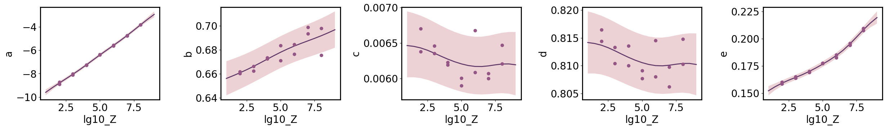

Multioutput Regression
[1]:
import numpy as np
import matplotlib.pyplot as plt
import seaborn as sns
import pandas as pd
import pathlib as pl
import os
import gumbi as gmb
WARNING (pytensor.tensor.blas): Using NumPy C-API based implementation for BLAS functions.
Use gumbi’s plotting defaults for stylistic consistency, good dataviz practice, and aesthetics. Use gmb.style.default if you don’t have the Futura font installed.
[2]:
plt.style.use(gmb.style.futura)
Setup
Load in wide-form data and store as a DataSet. We must specify which columns are considered “outputs”, and additionally we may indicate which input and output variables should be treated as log-normal or logit-normal.
[3]:
df = pd.read_pickle(gmb.data.example_dataset)
df = df[(df.Name == 'binary-pollen') & (df.Color == 'cyan') & (df.Metric == 'mean')]
outputs=['a', 'b', 'c', 'd', 'e', 'f']
log_vars=['Y', 'b', 'c', 'd', 'f']
logit_vars=['X', 'e']
ds = gmb.DataSet(df, outputs=outputs, log_vars=log_vars,logit_vars=logit_vars)
ds
[3]:
DataSet:
wide: [14 rows x 18 columns]
tidy: [84 rows x 14 columns]
outputs: ['a', 'b', 'c', 'd', 'e', 'f']
inputs: ['Code', 'Position', 'Color', 'Z', 'lg10_Z', 'Name', 'Left', 'Right', 'Pair', 'Y', 'X', 'Metric']
Train Model
Train a multioutput GP on five amplification parameters, using an RBF + linear kernel on lg10_Z to capture continuous variation along with a coregionalization kernel to allow for correlated but distinct behavior in both the mean and noise across the parameters.
[4]:
fit_params = ['a', 'b', 'c', 'd', 'e']
gp = gmb.GP(ds, outputs=fit_params)
n_p = len(fit_params)
gp.fit(continuous_dims='lg10_Z', linear_dims='lg10_Z');
Marginal Parameter Predictions
Predict each parameter individually, allowing us to ensure the marginal uncertainty is calibrated correctly.
[5]:
limits = gp.parray(lg10_Z=[1, 9])
x_pa = gp.prepare_grid(limits=limits, resolution=17)
axs = plt.subplots(1, n_p, figsize=(n_p * 5, 4))[1]
for ax, param in zip(np.atleast_1d(axs), fit_params):
gp.predict_grid(output=param)
y_upa = gp.predictions
gmb.ParrayPlotter(x_pa, y_upa).plot(ax=ax)
param_data = ds.tidy[(ds.tidy.Metric == 'mean') & (ds.tidy.Variable == param)]
x = gp.parray(lg10_Z=param_data['lg10_Z'])
y = param_data['Value']
ax.plot(x, y, 'o', color=sns.cubehelix_palette()[-3])
plt.tight_layout()
